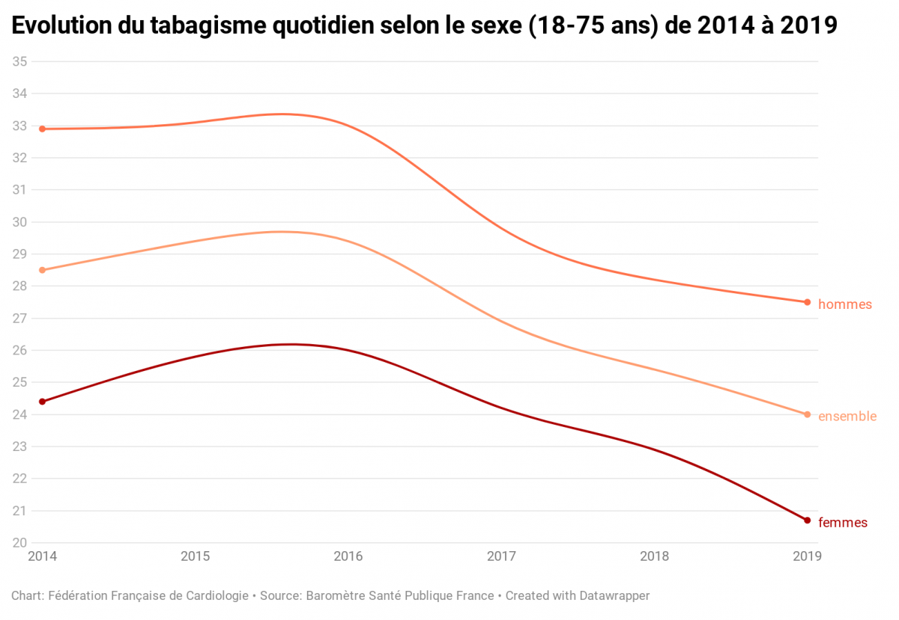
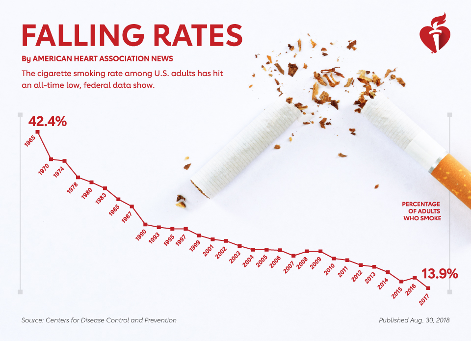

L'Épidémie de Tabagisme en France et aux États-Unis
La France (en 2019)
75 000 décès par an à cause du tabagisme
24 % des Français fumaient tous les jours (1,4 point de moins qu’en 2018)
Du tiers de Français le plus riche, seulement 18% fumaient tous les jours
Du tiers de Français le moins riche, 30% fumaient tous les jours
Le groupe qui utilise des produits de tabac le plus est l’hommes qui ont moins 55 ans “en précarité socio-économique” et “en moins bonne santé mentale”

La Source: Fédération Française de Cardiologie
Les États-Unis (en 2019)
480 000 décès par an à cause du tabagisme
14% des Américains fumaient tous les jours, (6,9 point de moins qu’en 2005)
De l’un quart d'Américains le plus riche, seulement 7,1% fumaient tous les jours
De l’un quart d'Américains le moins riche, 21,4% fumaient tous les jours
Le groupe qui utilise des produits de tabac le plus est les hommes qui ont 25-64 ans en précarité socio-économique (ils ont moins de $35,000) et ont d'angoisse

La Source: CDC
Entre les deux, Les États-Unis ont le moins de tabagisme et les plus strictes lois.